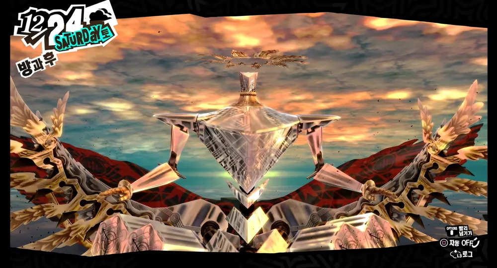
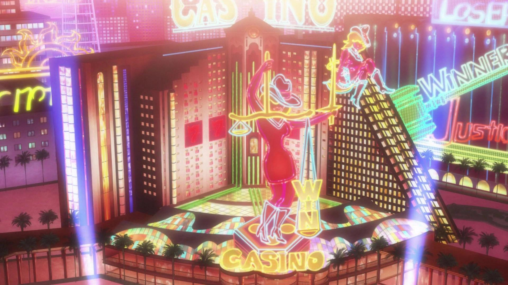
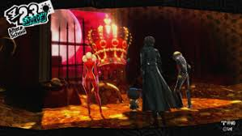
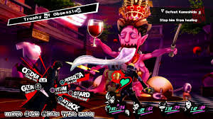

Headed by Kazuhisa Wada, this group was established by Atlus during the
development of Persona 3 in 2006, to co-exist with the Creative Department
1st Production also known as Team Maniax, who were primarily responsible for
developing entries in the Megami Tensei series at the company. The 2nd
Production division would instead become the primary in charge of developing
and overseeing all games and other products related to the Persona series,
after all previous entries in the series on the original PlayStation had
been mainly developed by Team Maniax. Leading the new Persona development
team would be Katsura Hashino, who served as the director of Persona 3 and
other Atlus games such as Shin Megami Tensei III: Nocturne and went to be
the director of Persona 4 and Persona 5, being involved on various spin-offs
until he departed from the division to create another one within Atlus.
After Hashino left in 2016, long time director and producer Kazuhisa Wada
became the head of the division. Outside of developing and overseeing all
Persona games and products, P-Studio also developed the game Catherine in
2011.
About Atlus (Publisher and Developer of Persona 5 Royal)
Atlus Co., Ltd. (Kabushikigaisha Atorasu) is a Japanese
video game developer, publisher, arcade manufacturer and distribution
company based in Tokyo. A subsidiary of Sega, the company is known for the
Megami Tensei, Persona, Etrian Odyssey, and Trauma Center series. Its
corporate mascot is Jack Frost, a snowman-like character from their Shin
Megami Tensei series. The company is also known for their Print Club arcade
machines, which are selfie photo sticker booths in East Asia.
Atlus was established in April 1986 and spent its early years as a video
game developer for other companies. It became a video game publisher of its
own in 1989 and existed until it was merged into Index Corporation in
October 2010. The Atlus name continued as a brand used by Index Corporation
for video game publishing until it filed for bankruptcy in June 2013. This
company was then acquired by Sega via its new subsidiary Sega Dream
Corporation which renamed itself Index Corporation in November 2013. In
April 2014, the non-video game assets and the Index name were spun off as a
separate subsidiary of Sega, leaving the company with its video game
division to be officially renamed Atlus.
A North American branch of the company, originally Atlus USA and now Atlus
West, was founded in 1991 in order to focus on publishing and localizing
games for North America. A European branch, handled via the London-based
Sega Europe, was founded in 2017.
About Persona 5 Royal
Plot Summary
Persona 5 Royal takes place within the Persona universe, revolving around a group
of high school students, who form part of the Phantom Thieves, who harness Personas, physical manifestations of
their inner psyche. The story begins in April "20XX (2016)" and spans
roughly a year. It is set in modern-day Tokyo and features several real-world
locations, including Akihabara, Shinjuku, and Shibuya. A major setting
throughout the game is Shujin Academy, a high school that the protagonist
attends. The second major location is the "Metaverse", a
supernatural realm consisting of the physical manifestations of humanity's
subconscious desires. In the Metaverse, people with corrupted desires form
their own unique "Palace," which is modeled after their distorted perception
of a place in the real world, along with a Shadow version of themselves
(their true self) possessing a "Treasure" symbolic of their desires.

If Maruki's Confidant was completed prior to November 18th, the events past the
original game's true ending will change and be extended: after the Phantom Thieves
defeat Yaldabaoth on Christmas Eve, while Sae Niijima requests the protagonist helps
her prosecute Masayoshi Shido by turning himself into the police, instead Goro Akechi
will suddenly reappear and offer to testify in his place. The protagonist and Morgana
both return to Leblanc and celebrate Christmas Day and New Year's Eve with the Phantom
Thieves. Because of Akechi's testimony, the woman whom Shido harassed at the start of
the year was found, and Shido was arrested for treason. However, before New Year, the
protagonist dreams of himself walking around school and hearing his friends talking about
their desires, with a garbled voice over the intercom expressing disappointment at the
protagonist's desire to leave.
The Phantom Thieves have to face various challenging enemies inside the
Metaverse within their Palaces, which have their own theme and distortion
based on said theme. For example, Kamoshida's palace is themed around a castle as he views
himself as the king of the school alongside some sexual themes as he abuses the
femme-presenting students due to his want of superiority. It can be seen through his words:
You're misunderstanding it all! I haven't sexually harassed anyone! They came on to
me because they wanted to get on my good side!
How dare you keep defying me... Looks like I gotta being out the big guns! Slaves!
Bring over you-know-what! Time for my killshot from when I was active and rockin'
it! Killshot... as in I'll make the kill!
There are about 9 Palaces
which they have to traverse with increasing difficulty over about 150 hours of playtime.
Characters
Members of the Phantom Thieves
Ren Amamiya
The protagonist of Persona 5 Royal, canonically named Ren Amamiya
(which appeared in several spin-off media before becoming his default name
in the 2022 re-release of Persona 5 Royal), is a second-year transfer
student at Shujin Academy, being placed there to continue his academics due
to his ongoing probation resulting from being falsely framed for assault.
At the beginning of the game, he has sacrificed himself for the sake of
protecting another person, having lost all power or influence in the world
as a consequence. However, beneath his quiet demeanor is a strong-willed
Wild Card leading the Phantom Thieves and capable of exploiting the
Metaverse to affect reality. To his teammates, his code name is Joker, and
to the residents of the Velvet Room he is known as the Trickster. The
protagonist is the leader of the rebellious Phantom Thieves of Hearts, a
group which aims to change society by touching the hearts of people and
performing illegal heists.
Ryuji Sakamoto
Ryuji Sakamoto is a playable character from Persona 5 Royal. He is a student at
Shujin Academy and a former track star who lives a double life as a Phantom
Thief. He is the protagonist's best friend and the Phantom Thieves' charge
commander. He is also misunderstood as a delinquent but cares a lot for his friends,
is selfless and willing to sacrifice himself to protect others.
Ann Takamaki
Ann Takamaki is a playable character from Persona 5 Royal. She is a student at
Shujin Academy who lives a double life as a Phantom Thief.
After ridden with guilt over her helplessness to protect others and herself,
which led to her letting her best friend Shiho Suzui fall victim to Suguru
Kamoshida, she would sacrifice herself to support her friends while facing,
overcoming and promising not to return back to her old self.
Morgana
Morgana is a major playable character of Persona 5 Royal. He is a mysterious being
with ties to Mementos. He doesn't know who he is, and seeks answers to
restore his memories.
While investigating Palaces, he encounters the protagonist and would have
stuck with him since. During the group's activities as Phantom Thieves,
Morgana acts as their second-in-command, mascot and guide. To his teammates,
he's also known as Mona during missions.
Morgana plays an important role in the group's infiltration of the Depths of
Mementos, the original final arc of Persona 5 Royal.
Yusuke Kitagawa
Yusuke Kitagawa is a playable character from Persona 5 Royal. He is an art student
from Kosei High School who becomes involved with the Phantom Thieves of
Hearts to bring a stop to his mentor's abuse, plagiarism, and murder
of his late mother.
Makoto Niijima
Makoto Niijima is a playable character in Persona 5 Royal. She is the younger
sister of Sae Niijima and student council president of Shujin Academy, and
lives a double life as a Phantom Thief. She joins the Phantom Thieves
after accidentally following the group into the Metaverse and confronting
the villian of the specific section of the game.
Futaba Sakura
Futaba Sakura is the Navigator of the Phantom Thieves from Persona 5 Royal. She
is different from the main crew of the Phantom Thieves, as prior to Persona 5
Strikers, she was a shut-in who does not attend school and rarely, if ever,
leaves her house.
Haru Okumura
Haru Okumura is a playable character from Persona 5. She is a wealthy girl
who attends Shujin Academy, and lives a double life as a Phantom Thief. She
is the only daughter of Kunikazu Okumura, the Thieves' fifth major target.
Her life controlled by her father, Haru would look away from the truth of
both her own desires and her father's intentions, substituting for vague
notions and superficial motivations. Aware of that, she would instead face
her desire of freedom and betray him with the support of her newfound
friends of the Phantom Thieves.
Goro Akechi
Goro Akechi is a playable character from Persona 5. He is a public celebrity,
touted by his fans and the media as the second coming of the detective prince
(after the first appeared in Persona 4), and is investigating the mysterious
Phantom Thieves of Hearts case sensationalizing Japan. Through his actions in the Phantom
Thieves, it appears that he takes over as second-in-command.
During the course of the story, Akechi would condemn the Phantom Thieves'
actions. He temporarily cooperates with them for professional reasons, using
the codename Crow. He also acts as the protagonist's rival. His past having
produced inherent feelings of hatred that would become a stigma for him,
Akechi tries to perfect himself to be acceptable to others.
In Persona 5 Royal, he acts as the deuteragonist of the new themes and events
of the story. He would let go of his desire to be acknowledged for the sake
of himself, no matter who he is.
Kasumi Yoshizawa
Kasumi Yoshizawa is a playable character from Persona 5 Royal. She is a
first-year transfer student at Shujin Academy and a talented gymnast who
gets involved with the Phantom Thieves of Hearts. She is overcome with guilt
after her older sister gives her life to save her. For most of the
game, thanks to Takuto Maruki's cognitive intervention, she believes she is
her older sister.
With the help of the Phantom Thieves, she recovers her true identity, faces
up to her guilt, and finds faith in herself. She helps to take down Maruki,
who has rewritten reality in an effort to erase all pain and suffering. Her
code name is Violet.
List of Palaces

The Casion Palace
Palace of Kamoshida
Palace of Madarame
Palace of Kaneshiro
Palace of Futaba Sakura
Palace of Okumura
Palace of Sae Niijima
Palace of Shido
Palace of the Public
Palace of Maruki
Kamoshida's Palace Sin of Lust
A world within the Metaverse created by Suguru Kamoshida. The Palace transforms
Shujin Academy into a castle, reflecting Kamoshida's belief that he is the king of
Shujin Academy. Its interior represents Kamoshida's twisted sexual desires and desire
to control the school completely, as paintings and books that glorify himself and
belittle the students in the school alongside pillars resembling buxom athlete bodies
and even photos implied to be Shiho naked appear throughout the castle. The Palace is
guarded by knight shaped shadows. It is also the area where most of the game's basics
are taught.
The protagonist and Ryuji mistakenly activate the Metaverse Navigator and enter here
on the way to Shujin Academy, where they were imprisoned by Shadow Kamoshida and were
almost executed before the protagonist awakens Arsène, allowing him to protect Ryuji
and escape. On the way, they also free Morgana who helps them escape the castle.
After they arrive to the real Shujin late, they instantly meet Kamoshida in front of
the school gates, who is completely oblivious to the Palace's existence.
They enter the Palace the second time with Morgana's instructions and encounter the
cognitive existences of the volleyball students being abused in extraordinary ways.
Ryuji initially does not recognize them as fakes before Morgana tells him that they
are merely how Kamoshida sees them as. Upon exiting the Palace, they were surrounded
by Shadows and Shadow Kamoshida's guards easily corner the protagonist and Morgana,
before Ryuji awakens Captain Kidd when Shadow Kamoshida angers him by revealing the
truth. They successfully defeat the Shadows and escape, but not before encountering
"Princess Ann," an obedient sex slave created from what Kamoshida views Ann: to be
toyed with under his mercy.
After Shiho Suzui's attempted suicide due to being sexually abused by Kamoshida as
revenge for Ann Takamaki rejecting his offer to go to bed with him, the party plans
another heist against the Palace. Unknowingly, Ann, who was caught in the Metaverse
Navigator, entered the Palace herself as she remembered the instructions to enter it.

Physical representation of Kamoshida's Treasure
Shadow Kamoshida kidnaps Ann and attempts to execute her, while telling the truth
about Shiho to her and accompanied by a harem of topless cognitive volleyball athletes
moaning in ecstasy, symbolizing that he merely treats his female athletes as if they
were sex slaves. This angers her and she awakens Carmen to fight alongside the party,
defeating the shadow guard captain Belphegor. Now with Ann being bewildered and
exhausted by the sudden turn of events, the party escapes the Palace. In Royal, a man
wearing a leather jacket can also be seen briefly right after they escape it. A
further incentive appears when Ryuji, the protagonist and Yuuki Mishima confront
Kamoshida after Shiho's attempted suicide, where Kamoshida threatens to expel the
three using the school board, forcing them to fight on a deadline.
The infiltration route needs to be secured on April 29th at the latest, as May 1st is
the final day to steal the Treasure; this is because, after the decision is made on
April 30th, the protagonist is sent home to prepare for the next day. Should these
deadlines be missed, Kamoshida will, at the board meeting, manipulate the school board
to expel the protagonist, Ryuji and Mishima. What happens to Ryuji, Ann, Shiho and
Mishima is unknown, but police officers will come to LeBlanc to arrest the
protagonist, saying that charges had been filed by Kamoshida against him. Because
the protagonist is on probation, he is then placed under arrest.

Kamoshida's Boss Fight
The newly founded Phantom Thieves of Hearts successfully locate the Treasure and
send a bunch of calling cards all over Shujin Academy, which alerts Kamoshida and
forces his Treasure, a gaudy, oversized royal crown to take form. Shadow Kamoshida
takes the treasure and manifests it into a form where it can be held on one hand,
and proceeds to justify his heinous actions based on everyone putting expectations
on him. The Phantom Thieves ignore his rationalizations, and he transforms into
Asmodeus a massive, grosteque and pink demonic creature with its massive tongue
sticking out.
In Royal, instead of casting Golden Medal Spike in random intervals,
Asmodeus-Kamoshida will summon a cognitive Mishima; a battered, obedient slave to use
the attack. If this fails, he will follow it up with a Cognitive copy of Shiho; a
scantly-clad bunny girl who acts in a provocative manner, again obedient to
Kamoshida. This indicates that regardless of how much pain he gave Shiho for all
the physical, emotional and sexual abuse that pushed her into committing suicide,
Kamoshida still sees her as nothing but a sex slave. Cognitive Shiho can be
neutralized by sustaining enough damage or damaging Kamoshida by a total of 300 HP or
more, causing him to be irritated and drive Shiho out.
They defeat Shadow Kamoshida and Ann wants to kill his Shadow, but stops as she
believes that a life of endless suffering and regret was a more appropriate decision
for him. The Shadow vanishes and the Palace collapses, with the real world Kamoshida
receiving a change of heart and thoroughly apologizing to the school, putting his
life in a legacy of shame and regret.
News/history of the Game Persona 5 and Persona 5 Royal
Persona 5 was officially revealed on November 24, 2013 following a 72-hour
countdown that eventually resulted in a series of announcements that
included Persona Q: Shadow of the Labyrinth and Persona 4: Dancing All
Night. A Persona 5 website domain was previously registered on June 25th,
2013 by Index Corporation, the former parent company of Atlus. An
American release was confirmed on February 25, 2014 with an originally
estimated release in 2015.
A PlayStation 4 version of the game was announced on September 1, 2014
during Sony's Tokyo Game Show conference, alongside another teaser trailer
that gave a first look on the game's setting and its protagonist. Later
next year, during the Night of the Phantom concert, the protagonist would be
further teased, only going by the name "the Phantom." On February 5, the
first trailer for the game was revealed. On June 25, a bonus Blu-Ray
containing a variety of Persona 5 related content was released as a preorder
bonus for the Japanese version of Persona 4: Dancing All Night on, which
also included the second trailer for the game.
On September 17, 2015, a third trailer for Persona 5 was shown as part of
the company's Tokyo Game Show 2015 broadcast which revealed that the release
date would be postponed to Summer 2016. According to Katsura Hashino,
this decision was made so that game could become the biggest out of all the
games he has directed so far.
Persona 5 eventually released on 15 September 2016 [Japan release], after years of delays.
The HD re-release Persona 5 Royal then released on 31 October 2019 [Japan release].
Trivia
The game usually takes between 80 to 120 hours to complete on a first
playthrough, with 100 being a rough average. However, a few have managed
to clock in over 150-180 hours; such players may be playing on harder
difficulty, may be slow readers, may prefer walking around the city
instead of using fast travel, or may be playing the PlayStation 3
version which has slower loading times that can add up.
Unlike previous Persona titles, which were set in fictional locations,
Persona 5 takes place in Tokyo, primarily in the Shibuya ward. A lot of
the locales in Persona 5 are heavily based on real-life Tokyo. Because
of this, Atlus had to ask Persona fans to stop bothering and
inconveniencing the locals and trespassing.
The Arcana written on the tarot cards are based on the Tarot of
Marseilles deck, using French names of the cards. The Death
tarot card is unnamed accordingly because Death (La Mort) is also
known as "The Card with No Name."
The credits of Persona 5, while showing the party, does not display the
party's Personas, unlike Persona 3 and 4. However, it does show the
protagonist awakening to his Persona, whereas the rest of the casts'
awakenings are not shown.
Persona 5 is the first Persona game to use circular chronology in its storytelling.
Persona 5 is the first-ever entry in the entire Megami Tensei series to support dual audio.
Persona 5 is the first Persona game whose physical release options are
supported on more than two PlayStation consoles, those being the
PlayStation 3, PlayStation 4, and PlayStation 5 (via backwards
compatibility support for PS4 titles).
While the Persona 2 duology is supported on a grand total of
five PlayStation systems, PSVita's backwards compatibility for
Innocent Sin and Eternal Punishment is only available via online
download. Additonally, Eternal Punishment is only available on
the PS3 and PSP systems via online download.
In beta builds of the game dating back 2015, the Seekers of Truth
and Nanako Dojima were intended to make cameos but were cut from the
final version.